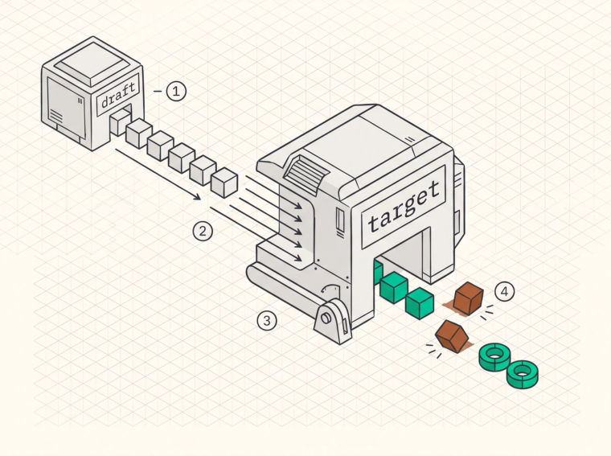

Speculative Decoding
The one-token-per-forward-pass ceiling
Standard autoregressive decoding produces one token per forward pass, because token t+1 can’t start until t is known. Per-token latency is therefore one full pass through every layer, and at small batch that pass is dominated by reading the weights, a fixed cost paid per token no matter how few FLOPs the token actually needs.
Which points straight at the opportunity. If a forward pass is bandwidth-bound on weights, it has compute sitting idle, and verifying several candidate tokens in one pass costs almost nothing extra because the weights get read once either way.
Draft then verify
A cheap model or head proposes k candidate continuations. The target model processes all k in a single forward pass, producing the distribution at each position. Then you accept the longest prefix consistent with the target’s distribution and resample at the first rejection.
The result is a accepted tokens per target forward pass, where a is the mean acceptance length, and throughput improves by roughly a at small batch.

O
1A small draft model, or a lightweight head on the target itself, proposes k candidate tokens.O
2The target verifies all k in a single forward pass. At small batch that pass is bandwidth-bound on weights, so the compute to check several candidates is very nearly free.O
3Rejection sampling accepts the longest consistent prefix and resamples at the first mismatch, which makes the output distribution exactly what the target alone would have produced.O
4The rejected tail is discarded, and both KV caches have to be rolled back to the accept point, which is easy with paging and awkward without.
Rejection sampling preserves the distribution
This is the property that makes speculative decoding respectable rather than a quality trade. For a candidate x with target probability p(x) and draft probability q(x) , accept with probability min(1, p(x)/q(x)), and on rejection sample from the normalised residual max(0, p(x) − q(x)).
The resulting token sequence is distributed exactly as if the target model had generated it alone, so speculative decoding is a pure latency optimisation rather than an approximation.
Two caveats bite in practice. Exactness holds for the sampling distribution rather than bit-for-bit output, since batching the verification changes reduction orders and outputs differ from unspeculated greedy decoding the same way any batch-size change does, which Chapter 20 explains. And exactness depends on the draft’s probabilities being the ones actually used in the accept test, so implementations that draft with a different temperature or top-p than they verify against are no longer distributionpreserving. That’s a common bug and an easy one to miss, because the output still looks fine.
Medusa
Medusa (Cai et al., 2024) adds k lightweight heads to the target model, where the k -th extra head predicts the token at position t+k+1 , all from the same hidden state, then verifies a tree of candidates
rather than a single sequence. No separate model to load or schedule, and lower acceptance than a good draft model because the heads predict independently and can’t condition on each other.
EAGLE
EAGLE (Li et al., 2024) drafts in the target model’s feature space , where a small autoregressive head predicts the next hidden state and that gets projected through the target’s LM head. Feature-level drafting is more accurate than token-level, partly because a hidden state carries more information than a sampled token and partly because the draft head can condition on the target’s own representation.
EAGLE-3 from 2025 is the current reference point. It drops the feature-regression objective in favour of direct token prediction, fuses low, middle, and high-level features from the target, and trains with a training-time test procedure that simulates multi-step drafting. Reported results are roughly 3.0 to 6.5× speedup over vanilla autoregressive decoding with mean acceptance length up to about 7.5 on code generation, 20 to 40% better than EAGLE-2, and it exhibits a scaling law where more draft training data keeps improving acceptance, which the original EAGLE didn’t.
Those headline numbers are batch-1 latency measurements. In a loaded server the same technique reports around 1.38× throughput at batch 64 in SGLang, and the gap between 6.5× and 1.38× isn’t a contradiction. It’s the entire story of when speculation helps.
When it helps and when it hurts
Speculation converts spare compute into fewer serial steps, so whether you have spare compute decides everything, and that depends on batch size.
At small batch the forward pass is bandwidth-bound on weights and the compute units are idle, so verifying k tokens costs almost nothing and speculation is close to a free a × on latency. At large batch the machine is already saturated, so verifying k candidates per sequence multiplies the work by k and yields only a tokens, which means that unless a approaches k you’ve lost throughput.
Break-even is roughly a > the cost of verifying k tokens over the cost of one token, which at large batch approaches a > k . Which is why production systems make speculation adaptive , speculating aggressively when the batch is small, reducing k as load rises, and disabling it under saturation. An engine that speculates at a fixed depth regardless of load will help at 3 a.m. and hurt at peak.
Acceptance is also workload-dependent, with code and structured output drafting extremely well because continuations are predictable, and free-form creative text drafting much worse.
Implementation challenges
Memory. A draft model has to be resident, and for a 70B FP16 target at 140 GB a 7B FP16 draft is 14 GB, which is smaller than people tend to assume. EAGLE-style heads are far smaller, typically a few hundred MB, which is a large part of their appeal.
KV cache for the draft. The draft has its own cache, its own paging, and its own rollback on rejection, so rejected tokens have to be removed from both caches, which means the KV append path needs to be undoable. Easy with paging, awkward without.
Tree verification. Medusa and EAGLE verify a tree of candidates, which needs attention with a custom mask expressing the tree structure. That’s a real kernel requirement rather than a detail.
Batched speculation. Different sequences accept different numbers of tokens in the same step, so the batch becomes ragged in a new dimension and the scheduler has to handle variable per-sequence progress per iteration.
Interaction with prefix caching. Draft-model KV is a second cache with its own hit rates, so the sharing logic gets duplicated or the draft becomes the bottleneck.
The economics
You pay for one draft pass, which is cheap, plus one target pass over k tokens instead of 1. You get a tokens per target pass instead of 1.
At batch 1 with EAGLE-3-class acceptance that’s a large latency win for a modest memory cost, and it’s the single most effective technique for interactive single-user latency. At high batch it’s a throughput loss unless carefully bounded. Both statements are true at once, which is why any benchmark claim about speculative decoding has to state its batch size before it means anything.
Key Concept
Speculative decoding breaks the one-token-per-pass ceiling by spending idle compute on verifying multiple candidates, and rejection sampling keeps the output distribution exact. EAGLE-3 reaches 3.0 to 6.5× at batch 1 with acceptance lengths up to about 7.5, and about 1.38× throughput at batch 64, because the technique converts spare compute into speed and a saturated server has none. Make speculation depth adaptive to load, and never quote a speedup without its batch size.
Exercises
Derive the break-even acceptance length as a function of batch size for a model where a decode step costs
t_w + B·t_a, weights plus per-sequence attention, and verifying k tokens costst_w + B·k·t_a.Explain why drafting with a different temperature than verification breaks distribution preservation, and give the corrected accept test.
Design the KV rollback path for tree-structured speculation over a paged cache. What’s the cost of rejecting at depth 1 against depth 5?
Build: implement n-gram speculation, drafting by finding the prompt’s last occurrence of the current suffix. Measure acceptance length on a summarisation workload and on a creative-writing workload, and explain the difference.